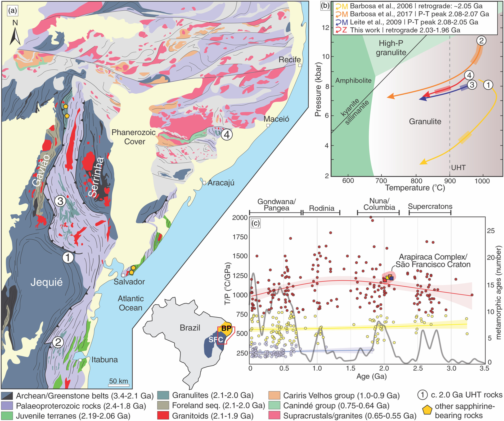

Ultrahigh-temperature Palaeoproterozoic rocks in the Neoproterozoic Borborema Province, Implications for São Francisco Craton dispersion in NE Brazil

Resumo em Português
Apesar de um consenso geral sobre uma conexão petrogenética no Paleo- ao Mesoproterozoico entre o Terreno Rio Apa (TRA) e as províncias Ventuari-Tapajós e Rio Negro-Juruena do Cráton Amazônico SW, sua conexão com o adjacente Terreno Paraguá ainda é tentativa. Neste trabalho, testamos a conexão entre o SW da Amazônia, o Rio Apa e os terrenos Paraguá comparando um extenso conjunto de dados novos e publicados de isótopos U-Pb-Hf em zircão.Uma curva LOWESS baseada em uma série temporal quase contínua de εHfT em zircão (~1400 dados) indica que o domínio Ocidental do TRA, o domínio San Diablo (sul do Terreno Paraguá) e a Província Ventuari-Tapajós são caracterizados por um array de retrabalhamento crustal associado à reciclagem da crosta Arqueana Amazônica. A análise estatística de pontos de mudança indica o momento de uma transição desse array de retrabalhamento para um episódio de aporte juvenil nas fontes magmáticas em 1809–1805 Ma (95% de confiança), dando origem ao domínio Oriental juvenil do TRA, ao Terreno Paraguá e à Província Rio Negro-Juruena. Essa evolução secular do εHfT em zircão é interpretada como representando uma transição de episódios de avanço (retrabalhamento crustal) para episódios de recuo (aporte juvenil e crescimento crustal) no orógeno acrecionário Paleo- ao Mesoproterozoico do SW da Amazônia.Os dados suportam uma conexão petrogenética entre o TRA, o Terreno Paraguá e o Cráton Amazônico SW. Postula-se que a Orogenia Alto Guaporé Mesoproterozoica (~1470–1430 Ma, fase acrecionária) eventualmente justapôs o TRA de alta pressão/temperatura média (fácies anfibolito) e o Terreno Paraguá de alta temperatura (fácies granulito) ao longo da margem SW da Amazônia, estabelecendo um cinturão metamórfico pareado durante a montagem de Rodínia. A conexão recém-formada TRA-Paraguá-Amazônia perdurou até pelo menos ~1110 Ma, com base na expressão da grande província ígnea Rincon del Tigre-Huanchaca que trunca a Amazônia-Paraguá e o TRA.